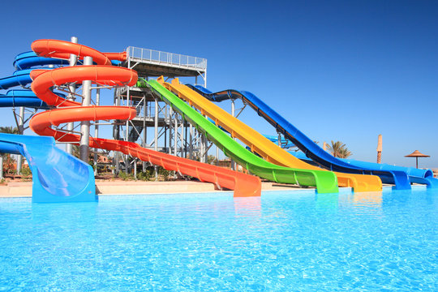
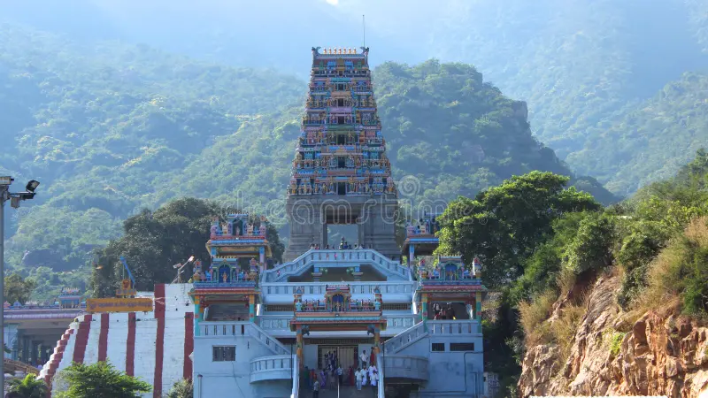
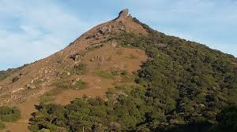
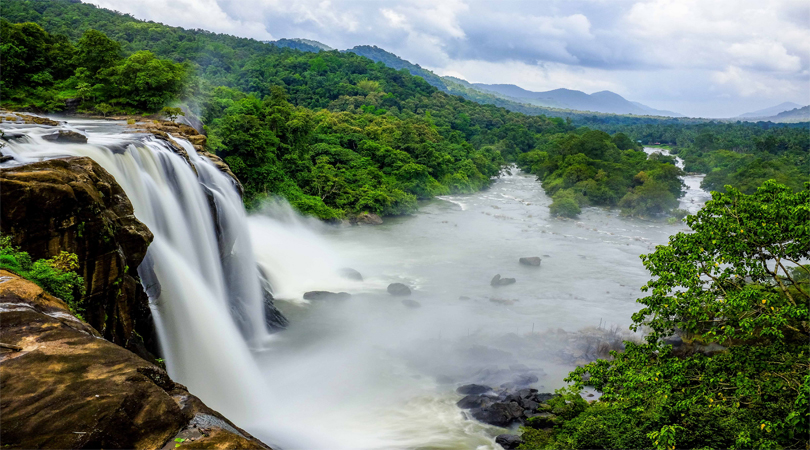

1.It hosts the Isha Yoga Centre, which offers yoga programs under the name Isha Yoga. The foundation is run "almost entirely" by volunteers.
Vasudev designed the 112-foot Adiyogi Shiva statue at the Isha Yoga Centre. It was inaugurated on Mahashivaratri, 24 February 2017, by the Prime Minister of India, Narendra Modi. The statue depicts Shiva as the first yogi or Adiyogi, and first Guru or Adi Guru, who offered yoga to humanity. It was built by the Isha Foundation using 20,000 individual iron plates supplied by the Steel Authority of India and weighs around 500 tonnes (490 long tons; 550 short tons). It has been recognised as the "Largest Bust Sculpture" by Guinness World Records. A consecrated Shivalinga, Yogeshwar Linga, is at its base

2.Vydehi Falls, Coimbatore Overview
The Vydehi water falls is situated some 35 km away from the Coimbatore city. People who pay a visit to Coimbatore must make it a point to visit the Vydehi water falls, as it is one of the most familiar water fall and is highly known for its magnificence.
The falls has pulled towards itself a large number of visitors because of its scenic attraction and beauty. People can avail a taxi or cab to pay a visit to the extravagant Vydehi water falls. This can be placed on top of the places-to-visit list when planning a vacation to Coimbatore. People can indulge into utmost pleasure of the scerenity of the place and can make their trip worth remembering by visiting these falls

3.Kovai Kondattam is an amusement park located about 2 kilometres away from Perur, in Coimbatore, Tamil Nadu. A fun-filled destination ideal for spending hours of unending entertainment with friends and family, Kodai Kondattam is an eco-friendly theme park. The park caters to a large base of visitors with its numerous water-based and dry rides. This destination is a popular picnic spot and a venue for conferences, parties, receptions, and corporate bookings Most famous residents here include Aqua dance, Wave pool, Dashing Cars, Rock Climbing, Hara-kiri & video parlour. Other attractions here include Family Pool, Kids' Pool, Water Slides, Water Falls, Dashing Car, Family Train, Giant Wheel, Chair-O-Plane, Aqua Dance Pirate Ship, Merry-go-round.

4.The Marudhamalai hill temple is located at a towering height of 500 ft in the highland on the Western Ghats. 15 kms away to north-west of Coimbatore city, the temple has an excellent invigorating atmosphere. Vehicles are allowed to pass through the Marudhamalai temple and the devasthanam has granted three buses from the low slope of the hill to get through the temple on top.
The Marudhamalai temple has its main deity as Lord Muruga and the temple attributes quite delightful facilities to the habit of making their visit a comforting one while offering their prayer to the deity. The major feature of this hill is that it grows important medicinal herbs, which is used extensively in making ayurvedic medicines.

5.The Velliangiri hill temple is contemplated to be the most conspicuous worship abode in and around Coimbatore and an immense number of tourist groups visit this hill temple to offer their prayers. Furthermore, the hill is known for its exorbitant natural resources. If you have the knowledge of herbal science, you will be able to find several varied essential rare herbs grown on the hill, which are used for medication. The Velliangiri Hill temple has the main deity as Lord Shiva, and people visiting this temple can indulge into the pleasing aura of the ambience and offer some heartfelt prayers.

6.Siruvani Waterfalls[1] (and the dam named after it) is located 36 km (22 mi) west of Coimbatore in the Western Ghats in India. The reservoir at Siruvani was built by the Indian government for Tamil Nadu, and funded by the Tamil Nadu government, to meet the drinking water requirements of Coimbatore. The gateways on either side of the road across the dam showcase typical Kerala and Tamil architectural styles. Siruvani is also home to indigenous tribes like the Mudugar and Irulas.